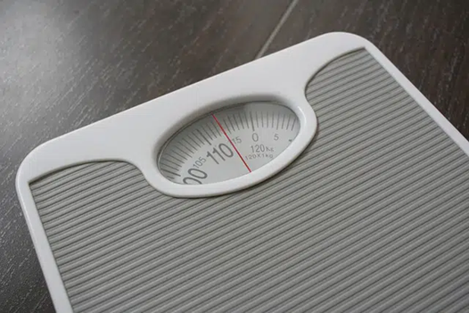

El gramo es una unidad de masa que forma parte del Sistema Internacional de Unidades. De símbolo g, el gramo equivale a una milésima parte de un kilogramo. Por otra parte, el gramo es una unidad de peso del Sistema Métrico Decimal que resulta equivalente a la fuerza que se ejerce sobre una masa de un gramo por efecto de la gravedad. Un gramo, en definitiva, equivale a 0,001 kilogramos. Sus submúltiplos son los decigramos, los centigramos, los miligramos y los microgramos, entre otros. Sus múltiplos, en cambio, son unidades como los decagramos, los hectogramos, los megagramos y los gigagramos, además del mencionado kilogramo. La idea de gramo se usa para aludir a la cantidad de algo cuyo peso equivale, justamente, a un gramo. Si una persona ingresa a un almacén y pide 500 gramos de harina de garbanzo, está solicitando al vendedor que le entregue una cantidad de esta harina que tenga un peso de 500 gramos.
A la unidad de masa que equivale a la milésima parte de un gramo se la denomina miligramo. La Real Academia Española (RAE), en su diccionario, también acepta el término milígramo (con acento en la segunda I).